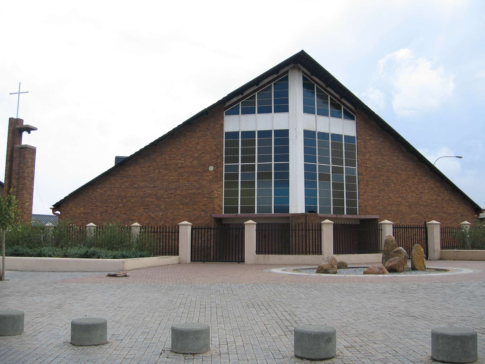
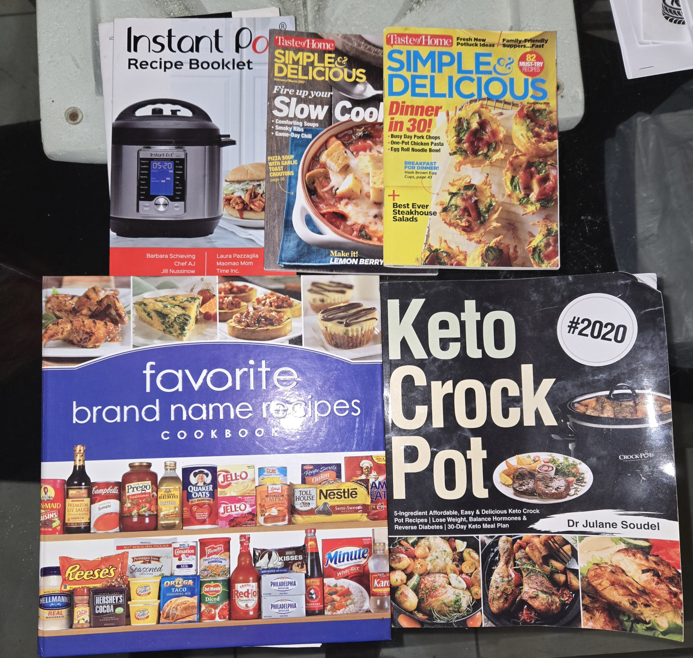
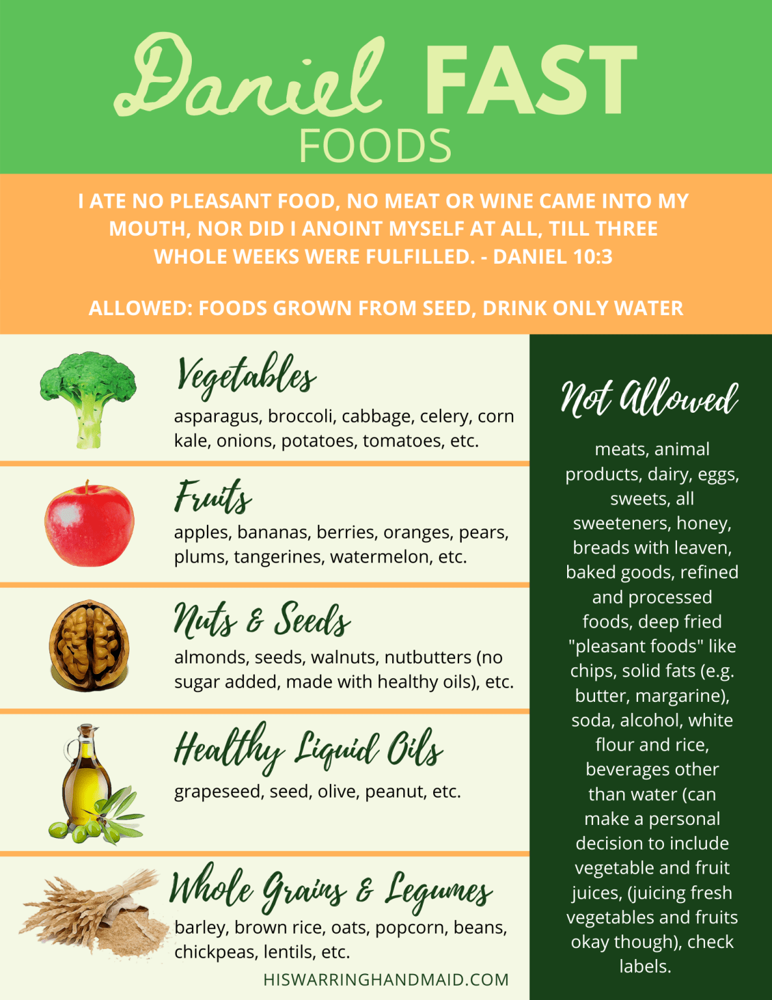

This website is dedicated to my mother Gwendolyn, an amazing and inspiring person. She has always been a source of support, kindness, and strength.

One of her personal goals is to explore new places, specifically with most of the family, and experience the different customs and culture involving religion.

She hopes to continue improving her cooking skills by trying recipes outside of her usual catalog.

While she still enjoys cooking her favorite meals, she's also been incorporating healthier ingredients and meals to focus on wellness and balance. Her goal is to achieve a healthier lifestyle for herself and the family.